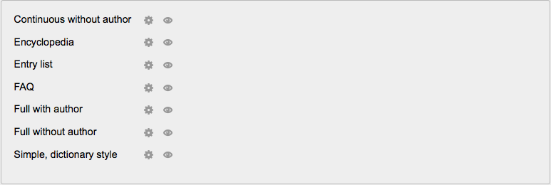

The glossary module has additional settings which may be changed by an administrator in Administration > Site administration > Plugins > Activity modules > Glossary.
- Entries shown per page - Number of Glossary entries shown per page. Default is set to 10.
- Duplicate entries allowed - Whether or not the Glossary will allow duplicate entries. Default is set to “No”.
- Allow comments on entries - Whether or not the Glossary will accept user comments on its entries. Default is set to “No”.
- Automatically link glossary entries - Whether or not a glossary should be automatically linked. Default is set to “Yes”.
- Approved by default - Whether or not the Glossary will define the approval status of an entry posted by a student. Default is set to “Yes”.
- Enable RSS feed - Enabling of RSS feeds for all glossaries. Default is set to “No”. Note: feeds will still need to be turned on manually in the settings for each glossary.
- Automatically link glossary entries - Whether or not glossary entries should be automatically linked. Default is set to “No”.
- This entry is case sensitive - Whether or not an entry is case sensitive when linked. Default is set to “No”.
- Match whole words only - Whether or not an entry should match the case in the target text by default when linked. Default is set to “No”.
To hide or show any of these entries, simply click on the “eye” icon next to the entry. Clicking on the “writing hand” icon will take you to the settings page for that entry.
